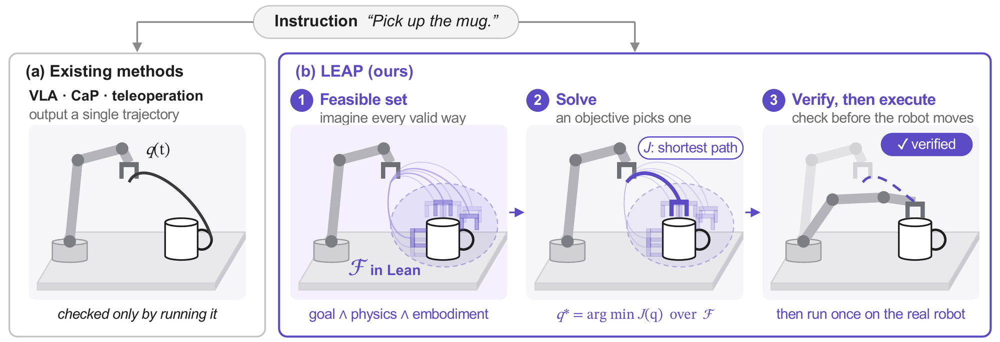
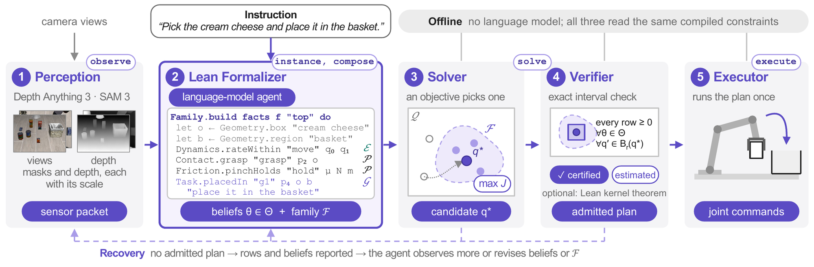
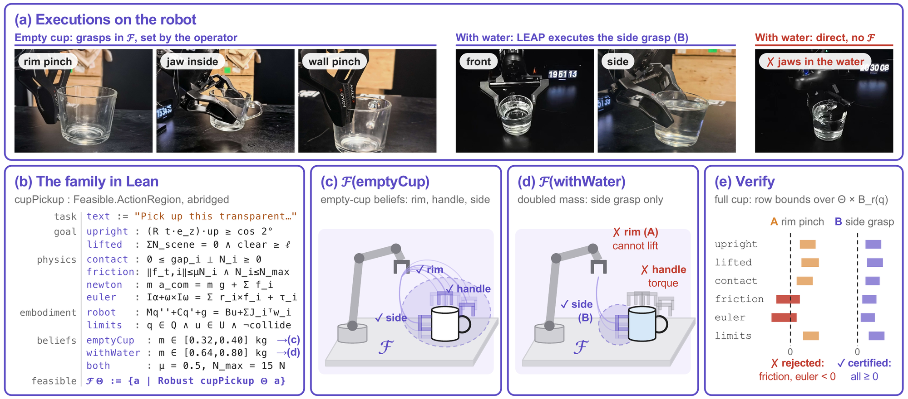
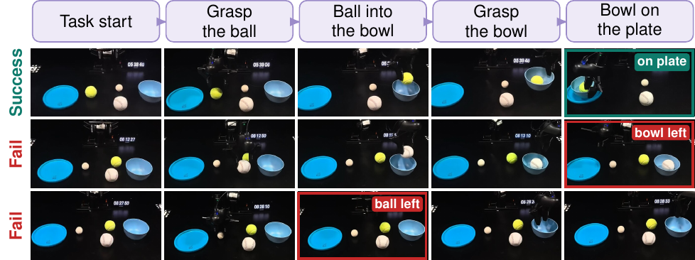
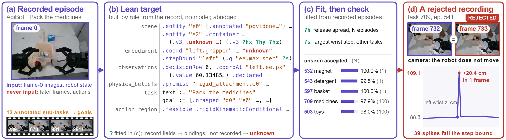

A manipulation task such as picking up a mug admits many valid actions: the mug can be grasped by its handle or its rim and lifted along countless paths. Vision-language-action models, Code-as-Policies and human teleoperation each generate a single action, and whether it is valid is found only by running it on the robot. LEAP works in the opposite order: it first defines all valid actions, then chooses one.
A language-model agent writes the feasible set of a task as a Lean 4 action family over a shared library of physical laws, separating goal, physics and embodiment constraints from user preferences. An objective selects one member of the set, which is checked against the same specification before the robot moves, using exact interval arithmetic and, optionally, the Lean kernel. The check covers only what the family states.
- A Lean-defined action family. The feasible set of a task, written over a library of physical laws. Any candidate action, from any source, can be verified against it with an explicit scope.
- A flexible sampler. Searches the family under any objective, estimated success or a user reward, and separates plans certified for every value perception allows from plans whose success is only estimated.
- LEAP-Harness. An agent harness for manipulation in the Lean-as-Policy manner: 73.8% on RoboDojo-Sim, 90.1% on RoboCasa365, 95.0% on LIBERO-PRO, and 13/15 on three real tabletop tasks.
IdeaFirst define all valid actions, then choose one
LEAP puts the feasible set at the top of the action hierarchy: feasible set ⊇ semantic command ⊇ trajectory. A command such as grasp(mug, handle) selects the subset reachable by one strategy, and a trajectory is a single member. Stating the set separates which actions are acceptable, a question that can be checked, from which acceptable action to take, an optimization the user controls.

Execution is inexact: when q is commanded, the robot performs some action in an execution set Br(q), where r is the tolerance of the executor, and every action in it must satisfy the rows. Quantities that perception cannot pin down, such as the position or mass of the mug, enter as intervals Θ rather than single numbers, and the robust feasible set ℱrob, the intersection of ℱ(θ) over all θ ∈ Θ, contains the actions that are valid in every scene they allow. Preferences such as speed or clearance stay out of the constraints and form a separate objective, so ℱ stays as large as the task allows.
LEAP-HarnessFive modules, one of which uses a model
Perception segments the scene with SAM 3 and recovers depth with Depth Anything 3, recording how uncertain each measured quantity is. The Lean Formalizer, a language-model agent, states the beliefs and writes the action family. The Solver searches the family under the objective, the Verifier bounds every row over the execution set and the belief box, optionally with a Lean kernel theorem, and the Executor runs the verified joint commands once. No tool accepts a joint target, and solver, verifier and executor read one compiled program, so the action that is solved, verified and executed is always the same one.

Pipeline demoFrom an instruction to a verified action
Two recorded episodes, step by step. Pick a benchmark, then walk through the five steps; every number, Lean line and video comes from the episode’s own record.
LIBERO-PRO, object swap, task 1, seed 4 · instruction“Pick the cream cheese and place it in the basket”
01 · Observe: beliefs with evidence
SAM 3 segments every object in the agentview and wrist images; depth turns each mask into a box. The agent decides which detection is which object and how wide each belief is. Nothing here is a joint target.
- cream_cheese.center
- (−0.115, −0.237, 0.011) m, visible centre
- object boxes
- 8: cream cheese, basket, basket interior, alphabet soup, butter, milk, orange juice, tomato sauce
- physics.floor.z
- derived from the cream-cheese box
- evidence version
- 13; basket, milk, orange juice and tomato sauce re-estimated before the third plan
02 · Formalize: the action family in Lean
The family the agent wrote and the harness executed, unabridged. It reads beliefs by name, declares a two-knot joint path, calls library laws (grasp, carried box, above-plane, keep-clear) and adds the goal row that quotes the instruction.
import Leap import LeapRuntime open Leap def family (f : Fidelity) : Family := Family.build LeapRuntime.facts f "cream_cheese_to_basket" do let cream_cheese ← Geometry.box "cream_cheese" let basket ← Geometry.box "basket" let basket_interior ← Geometry.box "basket_interior" let alphabet_soup ← Geometry.box "alphabet_soup" let butter ← Geometry.box "butter" let milk ← Geometry.box "milk" let orange_juice ← Geometry.box "orange_juice" let tomato_sauce ← Geometry.box "tomato_sauce" let floorz ← belief "physics.floor.z" let path ← jointPath 2 let poses ← Kinematics.toolPoses path let p0 := Kinematics.pose poses 0 let p1 := Kinematics.pose poses 1 let p2 := Kinematics.pose poses 2 let b2 ← GeometryMotion.carriedBox "carry2" cream_cheese p1 p2 0.999 (knot := some 2) let av_p1_1 ← Ext.segmentPose path 1 1 2 let av_p2_1 ← Ext.segmentPose path 2 1 2 let av_c_cream_cheese_2_1 ← GeometryMotion.carriedBox "avc.cream_cheese.2.1" cream_cheese p1 av_p2_1 0.9985 (knot := some 2) let av_c_cream_cheese_2_2 ← GeometryMotion.carriedBox "avc.cream_cheese.2.2" cream_cheese p1 p2 0.9985 (knot := some 2) GeometryMotion.grasp "grasp" p1 p0 cream_cheese 0.9993 (engage := (millimeters 1)) (support := floorz) (knot := some 1) Geometry.abovePlane "rim" b2.bottom basket.top (gap := (millimeters 10)) (knot := some 2) Task.placedIn "g1" "place it in the basket" b2 basket_interior (knot := some 2) Ext.keepsClearBall "av.alphabet_soup.t.1.1" av_p1_1 alphabet_soup (millimeters 3) (knot := some 1) Ext.keepsClearBall "av.alphabet_soup.t.1.2" p1 alphabet_soup (millimeters 3) (knot := some 1) Ext.keepsClearBall "av.alphabet_soup.t.2.1" av_p2_1 alphabet_soup (millimeters 3) (knot := some 2) Ext.keepsClearBall "av.alphabet_soup.t.2.2" p2 alphabet_soup (millimeters 3) (knot := some 2) Ext.boxKeepsClear "av.alphabet_soup.c-cream_cheese.2.1" av_c_cream_cheese_2_1 alphabet_soup 2 1 (millimeters 3) (knot := some 2) Ext.boxKeepsClear "av.alphabet_soup.c-cream_cheese.2.2" av_c_cream_cheese_2_2 alphabet_soup 2 1 (millimeters 3) (knot := some 2) Ext.keepsClearBall "av.basket.t.1.1" av_p1_1 basket (millimeters 3) (knot := some 1) Ext.keepsClearBall "av.basket.t.1.2" p1 basket (millimeters 3) (knot := some 1) Ext.keepsClearBall "av.basket.t.2.1" av_p2_1 basket (millimeters 3) (knot := some 2) Ext.keepsClearBall "av.basket.t.2.2" p2 basket (millimeters 3) (knot := some 2) Ext.boxKeepsClear "av.basket.c-cream_cheese.2.1" av_c_cream_cheese_2_1 basket 2 1 (millimeters 3) (knot := some 2) Ext.keepsClearBall "av.butter.t.1.1" av_p1_1 butter (millimeters 3) (knot := some 1) Ext.keepsClearBall "av.butter.t.1.2" p1 butter (millimeters 3) (knot := some 1) Ext.keepsClearBall "av.butter.t.2.1" av_p2_1 butter (millimeters 3) (knot := some 2) Ext.keepsClearBall "av.butter.t.2.2" p2 butter (millimeters 3) (knot := some 2) Ext.boxKeepsClear "av.butter.c-cream_cheese.2.1" av_c_cream_cheese_2_1 butter 2 1 (millimeters 3) (knot := some 2) Ext.boxKeepsClear "av.butter.c-cream_cheese.2.2" av_c_cream_cheese_2_2 butter 2 1 (millimeters 3) (knot := some 2) Ext.keepsClearBall "av.milk.t.1.2" p1 milk (millimeters 3) (knot := some 1) Ext.keepsClearBall "av.milk.t.2.2" p2 milk (millimeters 3) (knot := some 2) Ext.boxKeepsClear "av.milk.c-cream_cheese.2.2" av_c_cream_cheese_2_2 milk 2 1 (millimeters 3) (knot := some 2) Ext.keepsClear "av.orange_juice.t.1.1" av_p1_1 p0 orange_juice 0 1 (millimeters 2) 0.9985 (knot := some 1) Ext.keepsClear "av.orange_juice.t.1.2" p1 p0 orange_juice 0 1 (millimeters 2) 0.9985 (knot := some 1) Ext.keepsClear "av.orange_juice.t.2.1" av_p2_1 p0 orange_juice 0 1 (millimeters 2) 0.9985 (knot := some 2) Ext.keepsClear "av.orange_juice.t.2.2" p2 p0 orange_juice 0 1 (millimeters 2) 0.9985 (knot := some 2) Ext.boxKeepsClear "av.orange_juice.c-cream_cheese.2.1" av_c_cream_cheese_2_1 orange_juice 0 1 (millimeters 2) (knot := some 2) Ext.boxKeepsClear "av.orange_juice.c-cream_cheese.2.2" av_c_cream_cheese_2_2 orange_juice 0 1 (millimeters 2) (knot := some 2) Ext.keepsClearBall "av.tomato_sauce.t.1.1" av_p1_1 tomato_sauce (millimeters 3) (knot := some 1) Ext.keepsClearBall "av.tomato_sauce.t.1.2" p1 tomato_sauce (millimeters 3) (knot := some 1) Ext.keepsClearBall "av.tomato_sauce.t.2.1" av_p2_1 tomato_sauce (millimeters 3) (knot := some 2) Ext.keepsClearBall "av.tomato_sauce.t.2.2" p2 tomato_sauce (millimeters 3) (knot := some 2) Ext.boxKeepsClear "av.tomato_sauce.c-cream_cheese.2.1" av_c_cream_cheese_2_1 tomato_sauce 2 1 (millimeters 3) (knot := some 2) Ext.boxKeepsClear "av.tomato_sauce.c-cream_cheese.2.2" av_c_cream_cheese_2_2 tomato_sauce 2 1 (millimeters 3) (knot := some 2) closeAt 1 "cream_cheese" releaseAt 2 MotionTiming.velocityCeilings MotionTimingAllocation.episodeAllowance path
03 · Solve: the sampler searches the family
The objective is the estimated probability that every hard row holds. The search is local: it reduces row violation at the centre of the belief box, then raises the smallest margin. Over the episode the agent asked for a plan 11 times: 4 searches found no candidate, 3 fell below admission, and 1 family needed more control steps than remained.
- decisions
- 16: 14 joint coordinates + 2 tick counts
- hard rows
- 97: 64 physics, 4 goal, 29 episode budget
- starts / candidates / judged
- 33 / 59 / 3
- row evaluations
- 41,993
- belief samples
- 256
- search time
- 50.8 s (whole solve 64.5 s)
04 · Verify: what the plan carries
The belief box is too wide for a robust certificate, so the plan is chance-estimated: it is admitted because its estimate meets the episode's floor of 0.5. Lean evaluates the same family on the candidate and agrees with the exact integer check on all 97 rows; this is an evaluation, not a kernel proof.
chance-estimated · admitted 0.69, Wilson 95% [0.63, 0.74] not robust: 9 rows
05 · Execute: the admitted plan, once
The executor sends the bound joint commands, 199 control ticks within the 200 remaining. The first two plans stopped at a missed control gate (a joint stayed outside its 40 µrad tolerance), and the agent re-planned with re-estimated beliefs. The third plan completes all four commands; the evaluator reports success at step 234 of 280.
Shown: one LIBERO-PRO episode from a diagnostic run of LEAP-Harness, recorded with its full session. Benchmark numbers are in the table below.
RoboDojo-Sim, classify_objects, layout 0, dual-arm ARX X5 · instruction“Sort the objects by category into the three baskets”
01 · Observe: point sets with a sensing bound
Each detected object is kept as the observed point set itself, with a sensing bound ε. Laws read the point set directly, so a grasp is checked against what the cameras saw rather than against a fitted model.
- plush doll#1 centre
- (−0.277, −0.111, 0.787) m
- extent
- 10.4 × 8.7 × 3.5 cm, 1,311 points
- sensing bound
- ε = 10 mm (pad 4.8 mm)
- top grasp, both arms
- refuted by
width_fits
02 · Lean: laws decide every step
In this run the agent writes Python cells that call library tools; every motion they propose is decided by laws of the shared LeapLib, each a Boolean check in Lean with a soundness theorem. Two of the laws used here:
-- LeapLib/Kinematics.lean /-- The arm reaches `target` within `tol` (every coordinate), within its joint limits, with the tool's approach axis inside the cone of half-angle `acos(cnum/cden)` around `dir`. -/ def reaches (c : Chain) (ts : List Q) (target : V3) (tol : Nat) (dir : V3) (cnum cden : Nat) : Bool := match c.fk ts with | none => false | some P => c.limitsOk ts && qNear P.p.x target.x tol && qNear P.p.y target.y tol && qNear P.p.z target.z tol && withinCone P.R.col2 (QV.ofV dir.x dir.y dir.z) cnum cden -- LeapLib/Laws.lean /-- `Lmin` is a certified lower bound of `|u|` (`Lmin² ≤ |u|²`), so `extent ≤ aperture * Lmin` implies `extent / |u| ≤ aperture`: the object fits between the fingers when they close along `u`. -/ def widthFits (s : PointSet) (u : V3) (Lmin aperture : Nat) : Bool := !s.pts.isEmpty && decide (0 < Lmin) && decide ((Lmin : Int) * Lmin ≤ norm2 u) && decide (upper s u + upper s (neg u) ≤ (aperture : Int) * Lmin) theorem widthFits_sound (s : PointSet) (u : V3) (Lmin aperture : Nat) (h : widthFits s u Lmin aperture = true) (x y : V3) (hx : Member s x) (hy : Member s y) : dot u x - dot u y ≤ (aperture : Int) * Lmin := by simp only [widthFits, Bool.and_eq_true, decide_eq_true_eq] at h have h1 := member_upper s u x hx have h2 := member_upper s (neg u) y hy rw [dot_neg] at h2; omega
03 · Sample until a law admits
Carrying an object over a basket, the first request is refused and the refusal names the law that failed. The agent then samples waypoints and approach directions until the laws admit a path.
- over the basket
- refuted: over:reaches, 1,043 ms
- 72 candidates, vertical approach
- 0 certified
- 24 candidates, tilted approach
- 16 certified
- chosen
- mid → over, approach (0, 0.5, −0.87)
cands = [] for x in [-0.03, 0.0, -0.06]: for y in [0.03, 0.06]: for z in [0.86, 0.88, 0.90]: for clo in [cl, [1,0,0], [0,1,0], None]: v = robo.atomic(name='plan_path', params={..., 'execute': False}) if v['status'] == 'certified': cands.append(...)
04 · Verify: certified before it moves
plan_path needs an inverse-kinematics witness for every pose and every segment above the table; the path runs only if every law holds.
{"status": "certified", "failed": [], "refuting": [],
"waypoints": ["mid", "over"], "check_ms": 88.0, "executed": true,
"motions": [{"name": "mid", "err_mm": 1.3, "got_there": true},
{"name": "over", "err_mm": 1.4, "got_there": true}]}05 · Execute the certified path
Certified paths run on the joint route with 0.2–1.8 mm tracking error; Lean checks take 41–95 ms each. The agent finishes with three dolls in the white basket, two pens in the blue and two watches in the red, and the benchmark scores the episode 100.
Shown: one RoboDojo-Sim development episode with the LeapLib law tools, recorded with its agent transcript. The reported RoboDojo result (73.8%) is the official one-seed evaluation in the table below.
Lean libraryA LEGO-like library of physical laws
Families are not written from scratch. Each one is a short Lean 4 module that snaps together law bricks from a shared library: kinematics, geometry, contact, friction, dynamics and articulated mechanisms. A law is a Lean function that adds rows, names itself, and lists the premises under which its rows hold. Laws contain no numbers; masses, friction coefficients and tolerances enter as beliefs or as literals with units, and a row that mixes dimensions is rejected. Press a family to see which bricks it uses.
Geometry
Kinematics & time
Contact
Friction
Dynamics
Articulated mechanisms
-- one brick of the law library (simplified) -- the pinch holds the load: m(g + a) ≤ 2μN def pinchHolds (μ N m a : ℚ) : Bool := decide (m * (g + a) ≤ 2 * μ * N) -- what a "yes" guarantees, proved once theorem pinchHolds_mono (h : pinchHolds μ N m a = true) (ha : a' ≤ a) (hm : 0 ≤ m) : pinchHolds μ N m a' = true := by … -- stated assumptions: μ ≥ 0, two opposed pads, -- equal pad forces; m and μ come in as beliefs
LeapLibLeapLibExtending it
A new law is one Lean function that adds its rows and premises; in LeapLib every law is a decidable check with a soundness theorem. A new robot is one file of kinematic chains, joint domains, gripper geometry and the source of each value; neither part names a robot or a benchmark. A new benchmark connects through the common world interface with an adapter, as RoboDojo, RoboCasa365 and LIBERO-PRO do. Adding a brick makes it available to every family and every robot at once.
Writing a law or an adapter extends what LEAP can state; it does not by itself show that a new environment works. Each benchmark above was evaluated separately.
Worked examplePicking up a glass cup, empty and with water
The family states contact, friction (μ = 0.5, N ≤ 15 N) and the Newton–Euler equations of the cup and the arm, keeps the cup within 2° of upright, and names no grasp type. For the empty cup, ℱ contains rim, handle and side grasps. Water doubles the mass prior and only the mass belief changes: a rim pinch would now need a 26 mm instead of a 13 mm deep grip, so only the side grasp remains. Before the robot moves, the verifier rejects a rim pinch whose friction and Euler rows have negative lower bounds; the negative bounds name the rows that block certification.

Real robotLEAP-Harness vs. GPT-6 Astra on the same three tasks
Three tasks share a tabletop with a plate, a bowl and three balls: put the tennis ball, the baseball or the golf ball into the bowl, then the bowl on the plate, so the second step moves the container of the first. GPT-6 Astra outputs one end-effector target per model call, from embodiment information and all sensor inputs. Each pair below shows the same scene and instruction; only the policy differs.
All clips 4× speed. The Astra rollouts shown are failures; it succeeds on 5 of 15 rollouts overall.
Real-robot results. Success: completed rollouts, of five per task. Judge: recorded teleoperation trajectories judged correctly before they run, of ten per task, five of them successful.
| Task | Success | Judge accuracy | ||
|---|---|---|---|---|
| GPT-6 Astra | LEAP | GPT-6 Astra | LEAP | |
| Tennis ball | 3/5 | 5/5 | 1/10 | 10/10 |
| Baseball | 0/5 | 4/5 | 0/10 | 10/10 |
| Golf ball | 2/5 | 4/5 | 1/10 | 10/10 |
A feasible set can also judge an action that another policy produced. Before each recorded trajectory runs, LEAP checks its joint states against the task's Lean family, and GPT-6 Astra judges from the same input. LEAP is right on all 30, GPT-6 Astra on 2.

Marvin humanoid arms
The same library also drives a TianJi Marvin humanoid with two arms and multi-finger hands. In the first task both hands work together: to put the card box into the closed container, one hand lifts the lid and holds it clear of the opening, the other hand puts the card box inside while the lid stays held, and the hand holding the lid then puts it back. In the second task each hand places one object: a charger plug into the white basket, then the plush toy into the clear bowl. Both tasks are written as goals over existing laws, every step is checked before it runs, and the new robot enters only through its own profile and adapter.
BenchmarksSimulation results
LEAP receives what every entry receives and uses no learned policy. Baselines come from the public leaderboards and are not rerun; protocols are given under each table.
RoboDojo-Sim
Success rate (%) on 42 bimanual tasks of a dual-arm ARX X5 station. Zero-shot: built without RoboDojo demonstrations or episodes.
| Method | Type | Zero-shot | Overall | Gen. (12) | Prec. (8) | Long-Hor. (8) | Memory (6) | Open (8) |
|---|---|---|---|---|---|---|---|---|
| Learned policies | ||||||||
| π0.5 | VLA | × | 6.93 | 8.17 | 5.50 | 14.67 | 4.67 | 1.67 |
| VPP2 | WAM | × | 32.26 | 29.50 | 35.17 | 37.00 | 55.56 | 4.08 |
| WALL-OSS-1.0-lite | VLA | × | 34.97 | 37.94 | 29.08 | 32.25 | 56.00 | 19.58 |
| Agent harnesses | ||||||||
| GPT-6 Astrab | Agent + EEF | ✓ | 22.48 | 30.50 | 4.00 | 8.25 | 38.67 | 31.00 |
| PhysicalRSI | Agent + VLA | × | 31.38 | 15.62 | 32.50 | 37.33 | 46.56 | 24.92 |
| HexaShell-Preview | Agent + Code | × | 46.85 | 34.50 | 32.00 | 31.50 | 81.00 | 55.25 |
| PyRUA-Leana | Agent + Code | ✓ | 50.35 | 43.17 | 38.25 | 43.75 | 68.33 | 58.25 |
| GO-3 Nano Preview | Agent + WAM | ? | 56.42 | 33.66 | 76.00 | 53.50 | 63.67 | 55.25 |
| Q0-Preview | Agent + Planner | ✓ | 68.87 | 58.67 | 58.50 | 58.50 | 93.67 | 75.00 |
| COAPc | Agent + Code | × | 70.24 | 65.7 | 75.1 | 56.4 | 89.9 | 64.1 |
| LEAP (ours) | Agent + Lean | ✓ | 73.8 | 72.5 | 78.8 | 61.3 | 91.7 | 70.0 |
LEAP: one seed, 10 episodes per task (420 episodes), official client, judges and scoring; an abstention counts as a failure. Baselines from the public leaderboard (Nov. 3, 2026), not rerun. aBoard evaluation; its paper reports 58.2 / 51.6. bOne end-effector target per model call. cAuthor-reported result, averaged over three seeds.
RoboCasa365
Success rate (%) on the 50 target tasks; Seen and Unseen are composite tasks; 50 rollouts per task.
| Method | Atomic | Seen | Unseen | Overall |
|---|---|---|---|---|
| π0.5 | 39.6 | 7.1 | 1.2 | 16.9 |
| RLDX-1 | 67.6 | 27.9 | 8.5 | 36.0 |
| Xiaomi-Robotics-1 | 80.2 | 57.1 | 32.1 | 57.4 |
| Awomo-0.5I | 86.5 | 58.8 | 45.2 | 64.4 |
| HexaShell | 91.1 | 85.0 | 80.0 | 85.6 |
| LEAP (ours) | 95.1 | 90.5 | 84.0 | 90.1 |
Baselines from the public leaderboard (Nov. 16, 2026), not rerun.
LIBERO-PRO
Success rate (%) on 50 swap instances per suite. All methods use Claude Opus 5.5.
| Method | Object | Spatial | Goal | LIBERO-10 | All |
|---|---|---|---|---|---|
| Opus 5.5 (EEF) | 56.5 | 90.0 | 45.5 | 0.0 | 48.0 |
| PyRUA-Lean (code + π0.5) | 100.0 | 80.0 | 100.0 | 68.0 | 87.0 |
| LEAP, open loop | 60.0 | 82.0 | 70.0 | 34.0 | 61.5 |
| LEAP, one replan | 100.0 | 96.0 | 100.0 | 84.0 | 95.0 |
LEAP uses no learned policy. One replan corrects 67 of the 77 open-loop failures.
Robot dataFrom recorded episodes to Lean targets
A recorded episode can be converted into a Lean target by rule, without a learned model: record fields become Lean bindings, the annotated sub-tasks not yet finished become typed goals, and unrecorded values stay unknown. On six AgiBot tasks, targets accept 66.7–100% of unseen episodes of their own task; of the 58 rejections, 15 are corrupt recordings, so a rejection marks the record, not the demonstration.

CitationBibTeX
@article{fan2026leap,
title = {LEAP: Lean as Policy for Verifiable Robot Control},
author = {Fan, Weichen and Hu, Kairui and Diao, Haiwen and Hu, Siyuan and
Wang, Ziyi and Huang, Ziqi and Liu, Ziwei},
journal = {arXiv preprint},
year = {2026}
}